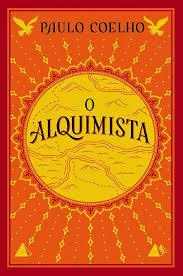
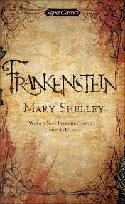
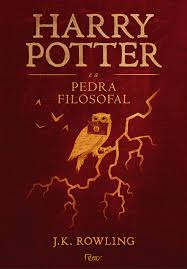
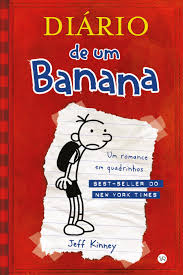

Empréstimos Populares:
|  |
 |
 |
O Alquimista
Paulo Coelho
Santiago, um jovem pastor espanhol, sonha com um tesouro escondido nas pirâmides do Egito. Sua jornada em busca de realização pessoal e espiritualidade o leva a entender que o verdadeiro tesouro está no autoconhecimento e na capacidade de seguir os próprios sonhos.
Emprestado |
A Culpa é das Estrelas
John Green
Hazel Grace, uma adolescente com câncer, conhece Augustus Waters em um grupo de apoio. Juntos, vivem uma história de amor intensa e transformadora, lidando com a finitude da vida e as complexidades dos sentimentos enquanto enfrentam a doença.
Não Emprestado |
O Poder do Hábito
Charles Duhigg
Este livro explora como os hábitos moldam nossas vidas, tanto no nível pessoal quanto organizacional. Duhigg apresenta uma análise de como nossos cérebros formam padrões automáticos e como podemos reprogramá-los para alcançar nossos objetivos.
Emprestado |
|
|
Reservas Recomendadas:
 |
 |
 |
1984
George Orwell
Winston Smith vive em uma sociedade totalitária sob o controle do Partido, que vigia todos os aspectos da vida. Ele começa a questionar o regime e a buscar a verdade, mas logo se vê em um dilema mortal sobre a liberdade e o controle. Uma reflexão profunda sobre a vigilância e a manipulação da realidade.
Emprestado |
O Hobbit
J.R.R. Tolkien
Bilbo Bolseiro, um hobbit tranquilo, é arrastado para uma aventura extraordinária com anões e um mago, em busca de um tesouro guardado por um dragão. Ao longo da jornada, ele enfrenta perigos e se descobre mais corajoso do que jamais imaginou.
Não Emprestado |
As Vantagens de Ser Invisível
Stephen Chbosky
Charlie é um adolescente tímido e introvertido que, após um ano difícil, encontra novos amigos e começa a explorar os altos e baixos da vida adolescente. O livro aborda temas como amizade, amor, saúde mental e a busca por identidade, tudo sob uma perspectiva honesta e emocionante
Emprestado |
|
Coleção Especial:
 |
 |
 |
Dom Casmurro
Machado de Assis
Bentinho narra a história de seu amor platônico por Capitu e suas dúvidas sobre a fidelidade dela. A obra é um estudo psicológico e filosófico sobre ciúmes, confiança e as limitações da visão humana sobre a verdade, mantendo uma atmosfera de mistério.
Emprestado |
O Grande Gatsby
F. Scott Fitzgerald
Ambientado na década de 1920, o romance segue Nick Carraway, que se torna amigo de Jay Gatsby, um milionário misterioso que vive para recuperar o amor de Daisy Buchanan. A história reflete sobre a busca incessante por riqueza, amor e a farsa do "sonho americano".
Não Emprestado |
Frankenstein
Mary Shelley
Victor Frankenstein, um jovem cientista, cria um monstro a partir de partes de cadáveres, mas ao abandoná-lo, gera uma série de tragédias. A obra é uma reflexão sobre a responsabilidade da criação e os limites da ciência, além de explorar temas como a solidão e a busca por aceitação
Emprestado |
|
|
Empréstimos para Crianças e Jovens:
|  |
 |
 |
Harry Potter e a Pedra Filosofal
J.K. Rowling
Quando Harry descobre que é um bruxo e recebe uma carta para estudar na Escola de Magia de Hogwarts, sua vida muda para sempre. Com novos amigos e desafios, Harry aprende sobre amizade, coragem e, acima de tudo, sobre o poder do amor e do sacrifício.
Emprestado |
O Pequeno Príncipe
Antoine de Saint-Exupéry
Um piloto perdido no deserto encontra um pequeno príncipe que lhe conta sobre suas viagens por diferentes planetas. Cada planeta e cada personagem que ele encontra trazem lições sobre a vida, amor e os valores mais importantes, ensinando que o essencial é invisível aos olhos.
Não Emprestado |
Diário de um Banana
Jeff Kinney
Greg Heffley registra as confusões e os dilemas de sua vida como um adolescente tentando se encaixar na escola, enquanto lida com sua família, amigos e as dificuldades típicas dessa fase da vida. O livro é uma mistura de comédia e reflexão sobre a adolescência.
Emprestado |
|